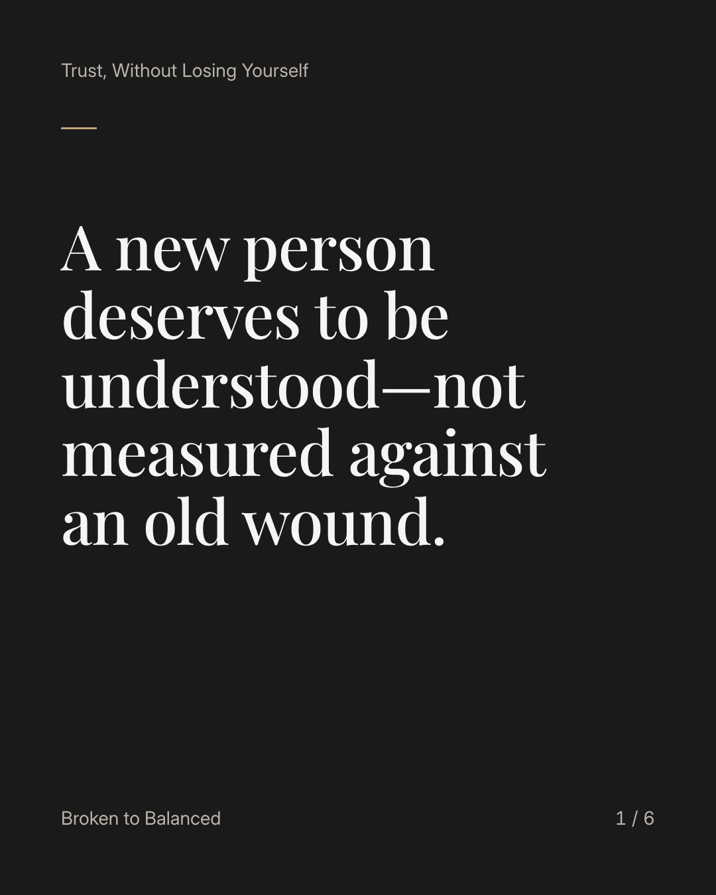
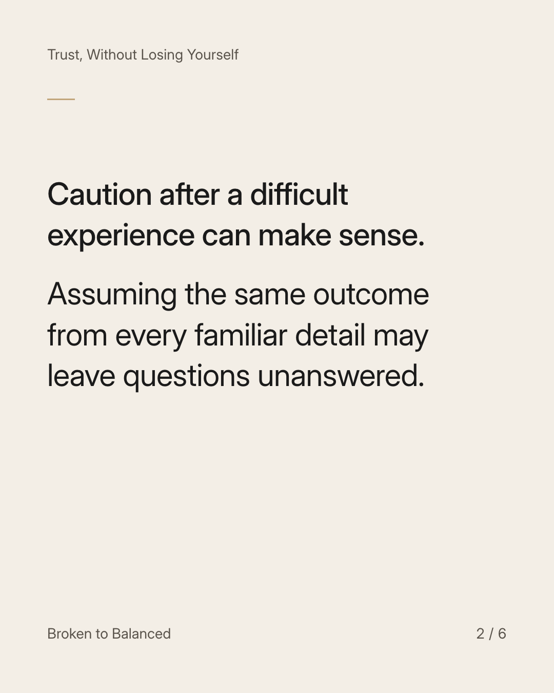
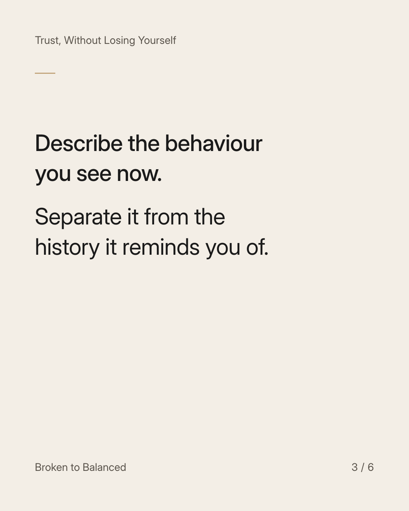
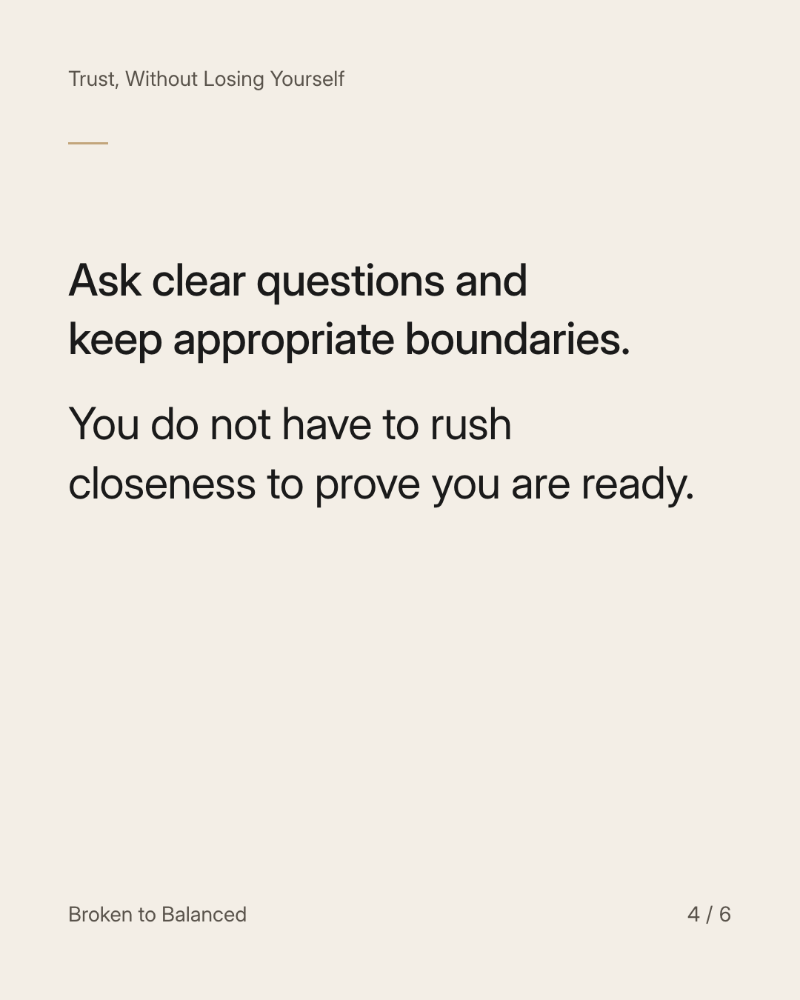
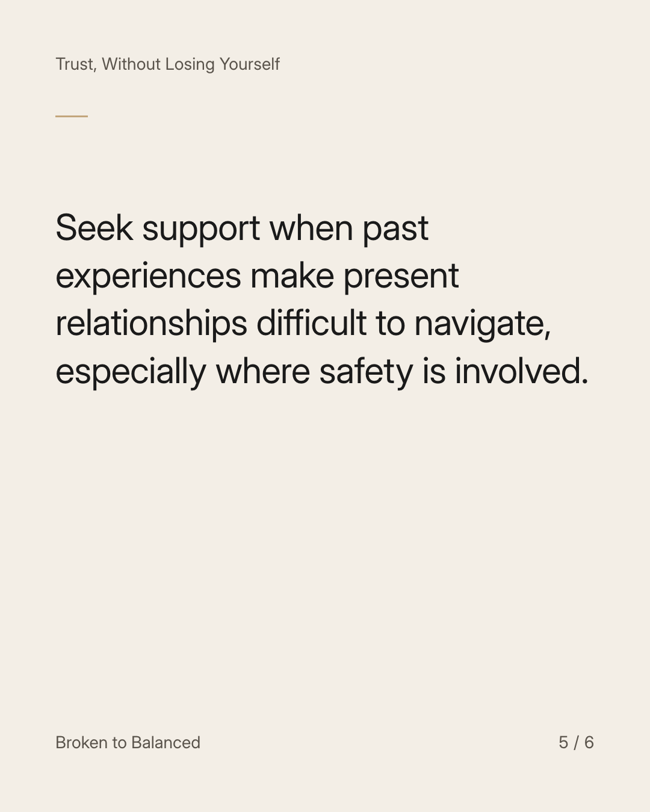
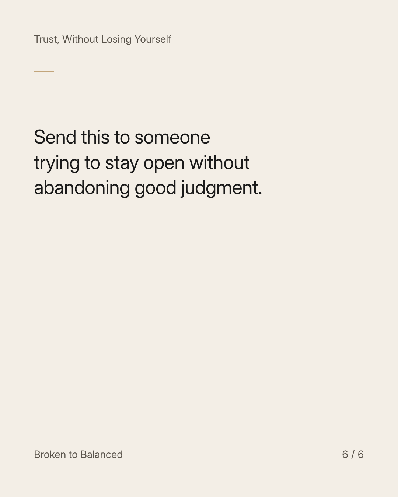

Exact text and accessibility text
A new person deserves to be understood—not measured against an old wound.
Slide 1 of 6. A new person deserves to be understood—not measured against an old wound.


Exact text and accessibility text
Caution after a difficult experience can make sense. Assuming the same outcome from every familiar detail may leave questions unanswered.
Slide 2 of 6. Caution after a difficult experience can make sense. Assuming the same outcome from every familiar detail may leave questions unanswered.


Exact text and accessibility text
Describe the behaviour you see now. Separate it from the history it reminds you of.
Slide 3 of 6. Describe the behaviour you see now. Separate it from the history it reminds you of.


Exact text and accessibility text
Ask clear questions and keep appropriate boundaries. You do not have to rush closeness to prove you are ready.
Slide 4 of 6. Ask clear questions and keep appropriate boundaries. You do not have to rush closeness to prove you are ready.


Exact text and accessibility text
Seek support when past experiences make present relationships difficult to navigate, especially where safety is involved.
Slide 5 of 6. Seek support when past experiences make present relationships difficult to navigate, especially where safety is involved.


Exact text and accessibility text
Send this to someone trying to stay open without abandoning good judgment.
Slide 6 of 6. Send this to someone trying to stay open without abandoning good judgment.
Exact caption
Plain-text fallback: select and copy the caption.